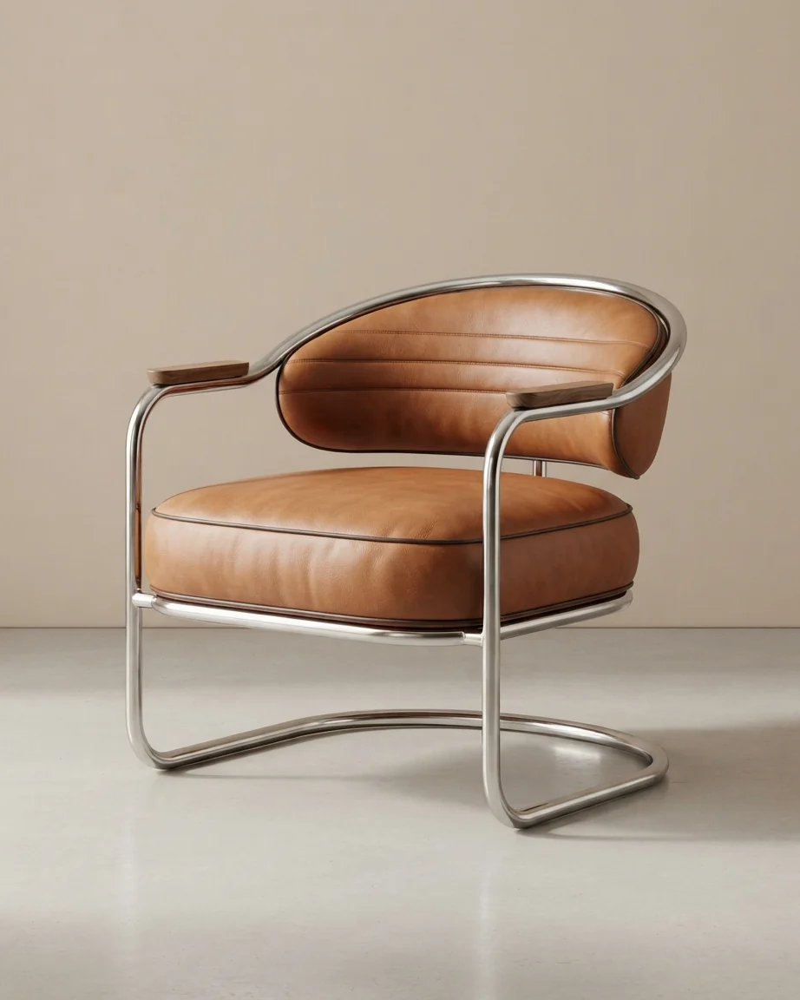
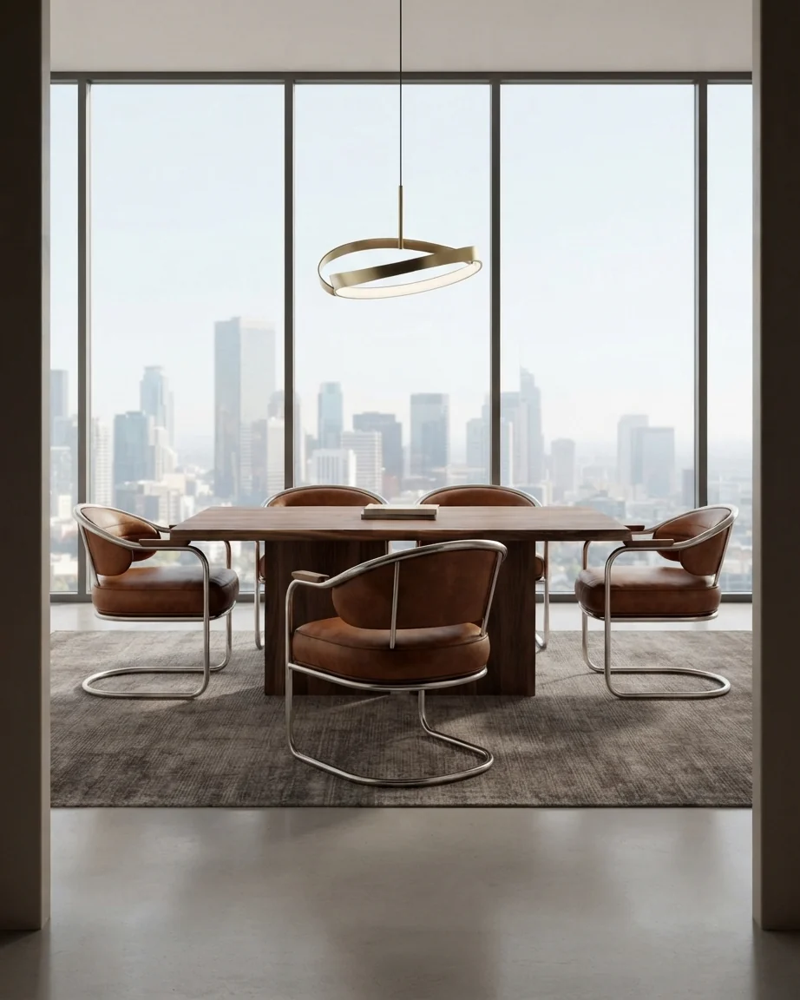

Серия Studio · Офис и переговорные
Stroke
Кресло для переговорной ручной работы
Кресло для переговорной: хромированная дуга обнимает мягкую спинку, переходит в подлокотники и уходит в консольное основание. Толстая подушка сиденья, накладки из ореха.
Кожаот 35 000 ₽
Выбран цвет: Коньячная кожа
- Размеры (Ш × Г × В)
- 620 × 620 × 780 мм
- Высота сиденья
- 450 мм
- Каркас
- Металл
- Обивка
- Коньячная кожа, Чёрная кожа, Тёмно-синяя кожа. Возможен свой материал
- Ткани
- Коллекции Noble, Fiori, Bohemia, Rio
- Гарантия
- 12 месяцев, ГОСТ 16371-2014
- Производство
- Фабрика полного цикла ГК «Фабрикант»
- Доставка
- По России и СНГ
Изготавливаем под ваш проект: точные размеры, обивку и стоимость фиксируем в персональном расчёте.

 Axis
Axis Forum
Forum Atrium
Atrium